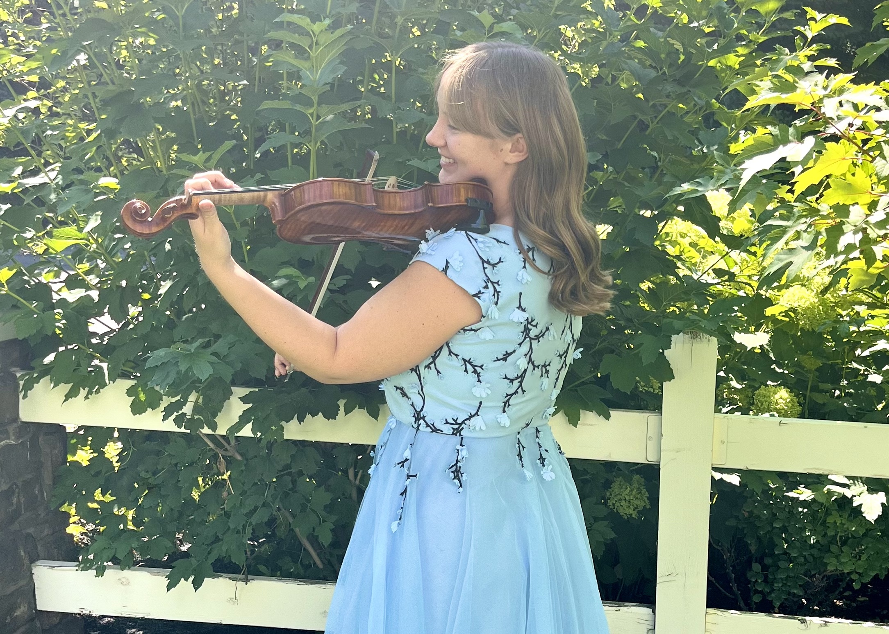

About Claire

Claire Mayfield is a composer, sound designer, and violinist currently based in Boston, MA. Claire is currently studying Game and Interactive Media Scoring and Film Scoring on a full tuition scholarship at the Berklee College of Music. Claire has also placed on the Dean's List every semester she has attended. Throughout her studies at Berklee, Claire has been involved in many ensembles such as the Berklee World Strings, the Berklee Contemporary Symphony Orchestra, the Audire Soundtrack Collective, and the Berklee Motion Picture Orchestra. She has leadership experience as a concertmaster for Audire and Berklee World Strings, and as an assistant concertmaster for the Berklee Contemporary Symphony Orchestra and the Berklee Motion Picture Orchestra. She will also be joining the executive board of Audire as the PR manager in fall 2025. Claire's compositions have been played in several concerts by the Berklee World Strings, and she has also arranged video game soundtracks for the Audire Soundtrack Collective. Claire also works as a session musician, playing violin in student projects in the Berklee Screen Scoring department. Claire is the sound designer for the video game Lost in an Illusion, as part of a collaboration project with USC students. She also has experience with both performing and directing foley sessions, as well as directing voice acting.